פשוט להצליח במתמטיקה › כל הנושאים › מעגל
מעגל – סרטוני הסבר ותרגול
59 סרטוני הסבר ותרגול בנושא מעגל – לשאלון 471, שאלון 571, שאלון 572. כל נושא מוסבר מהקל אל הקשה: קודם הרעיון, אחר כך תרגילים, ובסוף שאלות בסגנון בגרות. הכול בחינם, בשיטת "פשוט להצליח".
רוצים לעקוב אחרי ההתקדמות?נרשמים בחינם, וכל סרטון שראיתם מסומן ✓. ממשיכים מכל מכשיר.
הצטרפות בחינם ←מעגל – שאלון 471 כל הנושאים של שאלון 471 ←
 משולש ישר-זווית חסום במעגל – אנליטית, דמיון ושטחים
משולש ישר-זווית חסום במעגל – אנליטית, דמיון ושטחים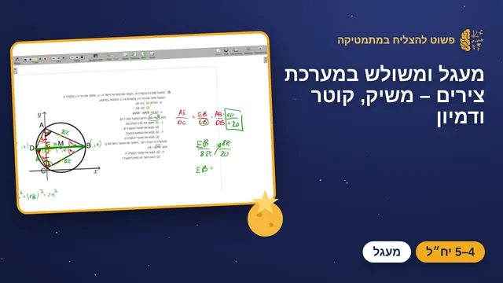
מעגל ומשולש במערכת צירים – משיק, קוטר ודמיון מעגל – משוואת מעגל, משיק ונקודות (שאלת בגרות 2021)
מעגל – משוואת מעגל, משיק ונקודות (שאלת בגרות 2021) מעגל – גאומטריה עם אנליטית וטריגו שאלון 471 – מתכונת
מעגל – גאומטריה עם אנליטית וטריגו שאלון 471 – מתכונת גאומטריה במעגל – משיק, קוטר ודמיון משולשים
גאומטריה במעגל – משיק, קוטר ודמיון משולשים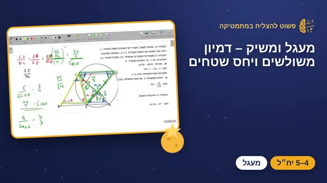
מעגל ומשיק – דמיון משולשים ויחס שטחים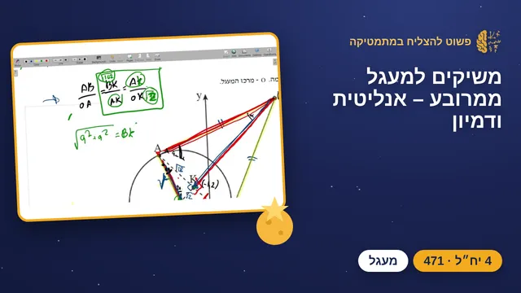
משיקים למעגל ממרובע – אנליטית ודמיון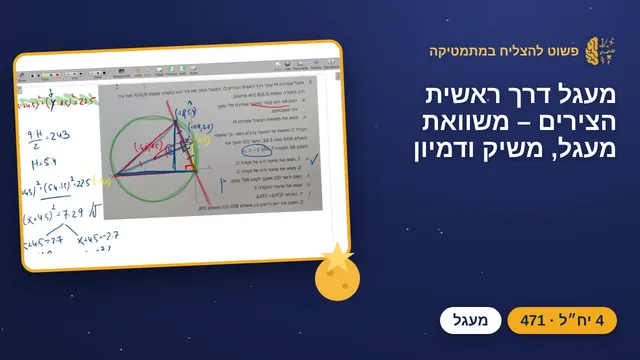
מעגל דרך ראשית הצירים – משוואת מעגל, משיק ודמיון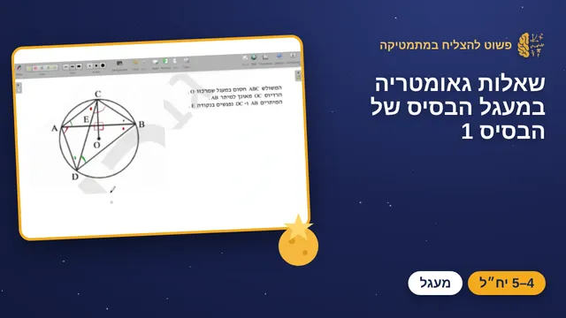
שאלות גאומטריה במעגל הבסיס של הבסיס 1 שאלות גאומטריה במעגל הבסיס של הבסיס 2
שאלות גאומטריה במעגל הבסיס של הבסיס 2 תרגילי מעגל עם טריגו ואנליטית 4 יח 471 2
תרגילי מעגל עם טריגו ואנליטית 4 יח 471 2 תרגילי מעגל עם טריגו ואנליטית 4 יח 471 3
תרגילי מעגל עם טריגו ואנליטית 4 יח 471 3 תרגילי מעגל עם טריגו ואנליטית 4 יח 471 1
תרגילי מעגל עם טריגו ואנליטית 4 יח 471 1 תרגיל בגרות קיץ 2025 שאלון 471 מעגל נדיר ביופיו
תרגיל בגרות קיץ 2025 שאלון 471 מעגל נדיר ביופיו משפטי מעגל – הבסיס המדהים 4 5 יח
משפטי מעגל – הבסיס המדהים 4 5 יח תרגילי משיק במעגל יא 4 5 יח 2
תרגילי משיק במעגל יא 4 5 יח 2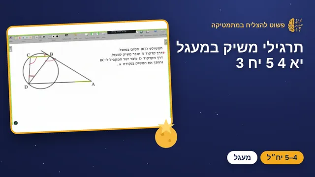
תרגילי משיק במעגל יא 4 5 יח 3 תרגילי משיק במעגל יא 4 5 יח 1
תרגילי משיק במעגל יא 4 5 יח 1 תרגילי משיק במעגל יא 4 5 יח 4
תרגילי משיק במעגל יא 4 5 יח 4 גאומטריה מעגל עם טריגו ואנליטית – מתכונת שאלון 471
גאומטריה מעגל עם טריגו ואנליטית – מתכונת שאלון 471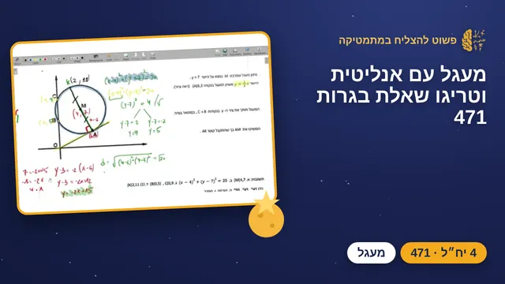
מעגל עם אנליטית וטריגו שאלת בגרות 471 מעגל – שאלות מיוחדות ברמת בגרות 471 4 יח 2
מעגל – שאלות מיוחדות ברמת בגרות 471 4 יח 2 מעגל – שאלות מיוחדות ברמת בגרות 471 4 יח 3
מעגל – שאלות מיוחדות ברמת בגרות 471 4 יח 3 מעגל – שאלות מיוחדות ברמת בגרות 471 4 יח 1
מעגל – שאלות מיוחדות ברמת בגרות 471 4 יח 1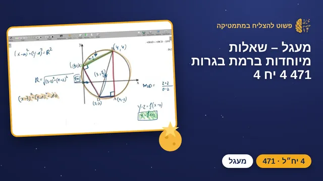
מעגל – שאלות מיוחדות ברמת בגרות 471 4 יח 4 מעגל עם אנליטית, טריגו ומשיקים 471 תרגיל טיל
מעגל עם אנליטית, טריגו ומשיקים 471 תרגיל טיל תרגילי מעגל כולל אנליטית וטריגונומטריה עם משפטי מעגל 471 1
תרגילי מעגל כולל אנליטית וטריגונומטריה עם משפטי מעגל 471 1 תרגילי מעגל כולל אנליטית וטריגונומטריה עם משפטי מעגל 471 2
תרגילי מעגל כולל אנליטית וטריגונומטריה עם משפטי מעגל 471 2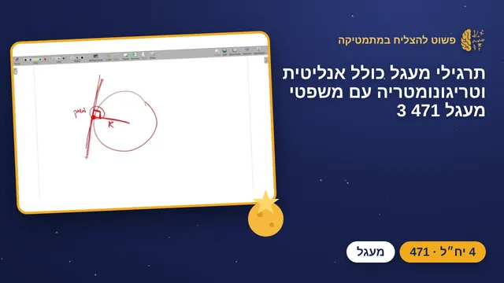
תרגילי מעגל כולל אנליטית וטריגונומטריה עם משפטי מעגל 471 3 מעגל משיק לצירים שאלון 471 4 יח
מעגל משיק לצירים שאלון 471 4 יח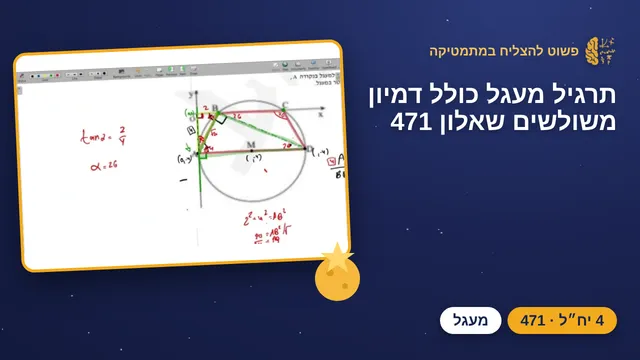
תרגיל מעגל כולל דמיון משולשים שאלון 471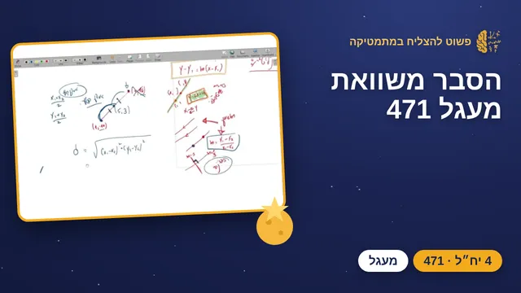
הסבר משוואת מעגל 471 משפטים במעגל – יסודי ביותר, סרטון חובה
משפטים במעגל – יסודי ביותר, סרטון חובה מעגל – גאומטריה עם טריגו תרגילים פשוטים 2
מעגל – גאומטריה עם טריגו תרגילים פשוטים 2 מעגל – גאומטריה עם טריגו תרגילים פשוטים 1
מעגל – גאומטריה עם טריגו תרגילים פשוטים 1 הסבר משוואת מעגל 471 (2)
הסבר משוואת מעגל 471 (2) מעגל – משוואת מעגל, גאומטריה וטריגו עם מעגל שאלון 471 6
מעגל – משוואת מעגל, גאומטריה וטריגו עם מעגל שאלון 471 6 מעגל – משוואת מעגל, גאומטריה וטריגו עם מעגל שאלון 471 9
מעגל – משוואת מעגל, גאומטריה וטריגו עם מעגל שאלון 471 9 מעגל – משוואת מעגל, גאומטריה וטריגו עם מעגל שאלון 471 1
מעגל – משוואת מעגל, גאומטריה וטריגו עם מעגל שאלון 471 1 מעגל – משוואת מעגל, גאומטריה וטריגו עם מעגל שאלון 471 7
מעגל – משוואת מעגל, גאומטריה וטריגו עם מעגל שאלון 471 7 מעגל – משוואת מעגל, גאומטריה וטריגו עם מעגל שאלון 471 3
מעגל – משוואת מעגל, גאומטריה וטריגו עם מעגל שאלון 471 3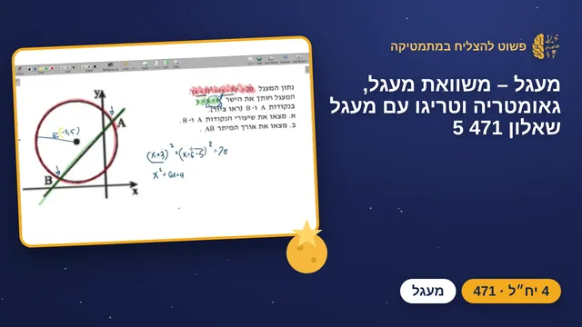
מעגל – משוואת מעגל, גאומטריה וטריגו עם מעגל שאלון 471 5 מעגל – משוואת מעגל, גאומטריה וטריגו עם מעגל שאלון 471 4
מעגל – משוואת מעגל, גאומטריה וטריגו עם מעגל שאלון 471 4 מעגל – משוואת מעגל, גאומטריה וטריגו עם מעגל שאלון 471 2
מעגל – משוואת מעגל, גאומטריה וטריגו עם מעגל שאלון 471 2 גאומטריה מעגל שאלת בגרות 4 5 יח
גאומטריה מעגל שאלת בגרות 4 5 יח גאומטריה מעגל עם דמיון משולשים – עצות איך להצליח בכל תרגיל
גאומטריה מעגל עם דמיון משולשים – עצות איך להצליח בכל תרגיל גאומטריה – הסברים על מעגל ומשיקים, שאלה תותחית
גאומטריה – הסברים על מעגל ומשיקים, שאלה תותחית משפטי מעגל ל-4 יח 481
משפטי מעגל ל-4 יח 481 טריגו ומעגל יא 4 יח 481 – שאלה שמסכמת את כל המעגל כולל משפטי מעגלגאומטריה 4 יח עם מעגל 481 – שאלת בגרות לרציניים בלבדטריגונומטריה ומעגל שאלת בגרות 481
טריגו ומעגל יא 4 יח 481 – שאלה שמסכמת את כל המעגל כולל משפטי מעגלגאומטריה 4 יח עם מעגל 481 – שאלת בגרות לרציניים בלבדטריגונומטריה ומעגל שאלת בגרות 481 תרגיל מעגל גאומטריה 4 5 יח כיתה י
תרגיל מעגל גאומטריה 4 5 יח כיתה י גאומטריה – תרגילים פתורים במעגל 481 581 2
גאומטריה – תרגילים פתורים במעגל 481 581 2 משפטי מעגל – הסברים 481 581גאומטריה – תרגילים פתורים במעגל 481 581 1
משפטי מעגל – הסברים 481 581גאומטריה – תרגילים פתורים במעגל 481 581 1מעגל – שאלון 571 כל הנושאים של שאלון 571 ←
משולש ישר-זווית חסום במעגל – אנליטית, דמיון ושטחיםמעגל ומשולש במערכת צירים – משיק, קוטר ודמיוןמעגל – משוואת מעגל, משיק ונקודות (שאלת בגרות 2021) גאומטריה במעגל – מרובע חסום, דמיון ויחס שטחים (5 יח)גאומטריה במעגל – משיק, קוטר ודמיון משולשיםמעגל ומשיק – דמיון משולשים ויחס שטחיםשאלות גאומטריה במעגל הבסיס של הבסיס 1שאלות גאומטריה במעגל הבסיס של הבסיס 2
גאומטריה במעגל – מרובע חסום, דמיון ויחס שטחים (5 יח)גאומטריה במעגל – משיק, קוטר ודמיון משולשיםמעגל ומשיק – דמיון משולשים ויחס שטחיםשאלות גאומטריה במעגל הבסיס של הבסיס 1שאלות גאומטריה במעגל הבסיס של הבסיס 2 תרגיל גאומטריה מעגל 5 יחמשפטי מעגל – הבסיס המדהים 4 5 יחתרגילי משיק במעגל יא 4 5 יח 2תרגילי משיק במעגל יא 4 5 יח 3תרגילי משיק במעגל יא 4 5 יח 1תרגילי משיק במעגל יא 4 5 יח 4משפטים במעגל – יסודי ביותר, סרטון חובהמעגל – גאומטריה עם טריגו תרגילים פשוטים 2מעגל – גאומטריה עם טריגו תרגילים פשוטים 1גאומטריה מעגל שאלת בגרות 4 5 יחגאומטריה מעגל עם דמיון משולשים – עצות איך להצליח בכל תרגילגאומטריה – הסברים על מעגל ומשיקים, שאלה תותחית
תרגיל גאומטריה מעגל 5 יחמשפטי מעגל – הבסיס המדהים 4 5 יחתרגילי משיק במעגל יא 4 5 יח 2תרגילי משיק במעגל יא 4 5 יח 3תרגילי משיק במעגל יא 4 5 יח 1תרגילי משיק במעגל יא 4 5 יח 4משפטים במעגל – יסודי ביותר, סרטון חובהמעגל – גאומטריה עם טריגו תרגילים פשוטים 2מעגל – גאומטריה עם טריגו תרגילים פשוטים 1גאומטריה מעגל שאלת בגרות 4 5 יחגאומטריה מעגל עם דמיון משולשים – עצות איך להצליח בכל תרגילגאומטריה – הסברים על מעגל ומשיקים, שאלה תותחית תרגיל מעגל גאומטריה 5 יח – תרגיל בגרות פתורתרגיל מעגל גאומטריה 4 5 יח כיתה יגאומטריה – תרגילים פתורים במעגל 481 581 2משפטי מעגל – הסברים 481 581גאומטריה – תרגילים פתורים במעגל 481 581 1
תרגיל מעגל גאומטריה 5 יח – תרגיל בגרות פתורתרגיל מעגל גאומטריה 4 5 יח כיתה יגאומטריה – תרגילים פתורים במעגל 481 581 2משפטי מעגל – הסברים 481 581גאומטריה – תרגילים פתורים במעגל 481 581 1